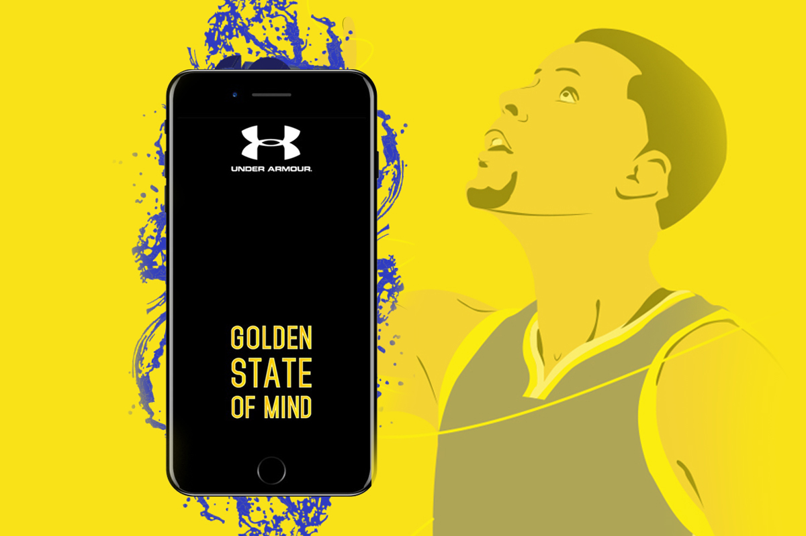
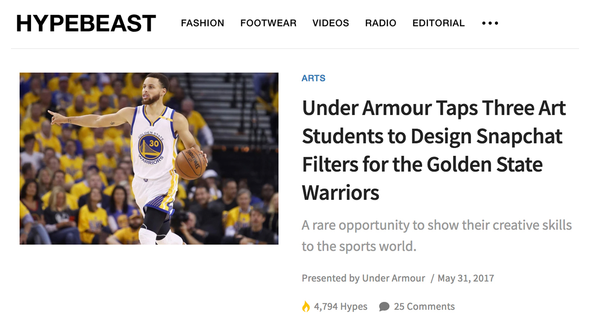
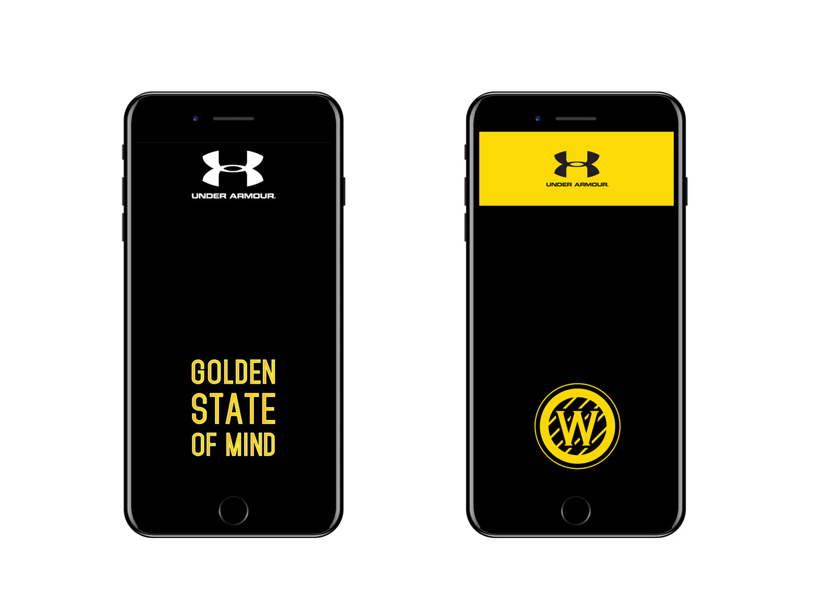
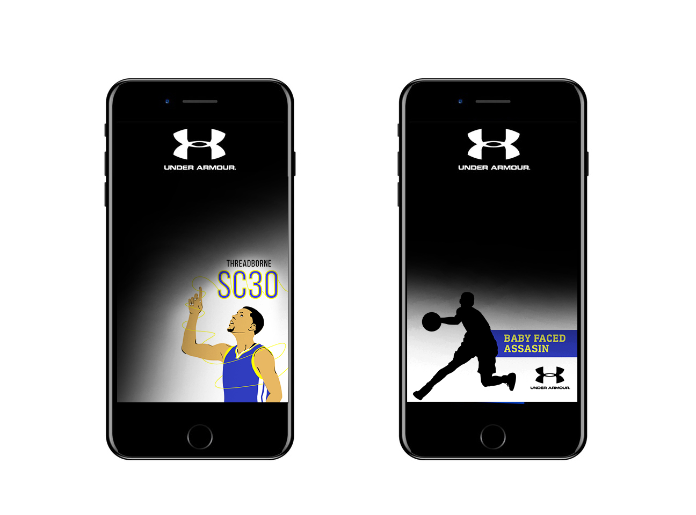

GS Warriors Snapchat Filters
Stephen Curry and Golden State Warriors inspired designs for use with Snaphat’s photo filter features.
In collaboration with fashion and popular culture blog Hypebeast and sportswear company Under Armour, the California College of the Arts rounded up three of their design students to design Snapchat filters to be used inside the Oracle Arena during the 2017 Golden State Warriors playoff games against the Cleveland Cavaliers.

Article on the Hypebeast homepage.
I was one of the students that participated in the project and the article showcasing the work was published on Hypebeast May 2017. The article can be viewed here. 
As a Bay Area native I was excited and thrilled at the opportunity to represent my favorite basketball team and to be able to build something fun for the fans of Stephen Curry and the Warriors.
Round one of playoff snapchat filters.
